OEDRO Merch Collection
OEDRO 周边
从上车时的第一杯咖啡，到周末装满后备厢的帆布袋。
保温咖啡杯 Insulated Coffee Cup
12 美制液量盎司（355 mL）对应美国咖啡店常见的小杯，16 盎司约 473 mL。杯架配件厂给出的适配内径示例从 2.5 到 3.8 英寸（6.35–9.65 厘米）；两款杯底取 2.46 英寸（6.25 厘米），底部 3 厘米内最宽 6.30 厘米。深杯架还要核对杯身、卡爪和车主手册，车型适配以实样为准。

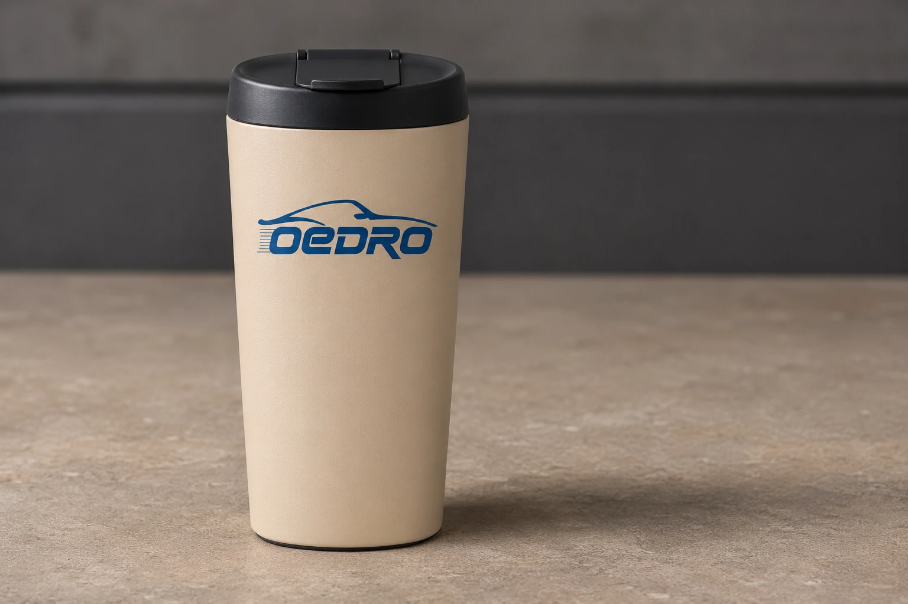
砂岩 Sandstone
砂岩米哑光杯身，正面丝印 OEDRO 蓝色车标。304 不锈钢双层抽真空，杯高 6.22 in（15.8 cm），杯底直径 2.46 in（6.25 cm）。
给厂家的规格
砂岩保温杯 · Sandstone Travel Mug 数量和交付：这一款单报价 200 个，同款同色，先打 3 个实样。优先现成杯身和盖模。请附现货款号、实物图、各段尺寸和实际称重。 容量与外形：有效容量 355–365 mL（12.0–12.3 US fl oz），装 355 mL 后可正常旋盖，齐口容量 380–400 mL（12.8–13.5 US fl oz）。无把、直立微锥形。含盖高 15.8 ± 0.4 cm（6.22 ± 0.16 in），杯口内径 6.2 ± 0.2 cm（2.44 ± 0.08 in），杯身最宽 7.4 ± 0.2 cm（2.91 ± 0.08 in），盖外径 ≤7.6 cm（2.99 in）。杯底外径 6.25 ± 0.05 cm（2.46 ± 0.02 in）。含防滑垫，从底往上 3.0 cm（1.18 in）全段外径 ≤6.30 cm（2.48 in），上部平顺过渡，实样正常插入内径 6.40 cm（2.52 in）、深 3.0 cm（1.18 in）的圆形检具。 结构：内外 SUS304（18/8）不锈钢双层抽真空，建议内壁原板厚 0.040 cm（0.016 in）、外壁 0.050 cm（0.020 in）。内壁抛光无内涂层，杯口圆边。盖为石墨黑 #25282B 食品接触级 PP 螺纹旋盖，带贴平翻片和止水塞，硅胶密封圈可徒手拆洗、可单配。杯底抽真空封点用无铅材料，底部薄防滑垫嵌平。 外观：细砂哑光粉末涂层，砂岩米 #D7C6AF。杯正面居中做一处原版 OEDRO 车形和字标，宽 5.0 × 高约 1.52 cm（1.97 × 0.60 in），标中心距底约 8.8 cm（3.46 in），按原文件比例。一色耐磨固化丝印，OEDRO 蓝 #0D4D95。请提供固化墨样，做百格胶带附着检查后保持图案完整。色值配实体色片对样。 验收：室温 20 ± 2°C（68 ± 4°F），向未预热样杯注入 355 mL（12 US fl oz）、95 ± 1°C（203 ± 2°F）的水，旋紧闭合，6 小时后测水温 ≥60°C（140°F），提供 3 只样品读数。常温装水 300 mL（10.1 US fl oz），闭盖倒置 5 分钟、横放 30 分钟，各无可见水珠。旋盖/翻片开合 500 次并做 10 次热冷循环后复验，检查螺纹无变形、盖不松脱、密封圈可拆装。内胆无异味和锈点，外涂层无明显露底、起泡、掉色，标清楚无掉墨或毛边。提供对应成品接触热饮的美国食品接触合规资料。 单件包装：软纸套防擦，加牛皮瓦楞单盒，外尺寸约 8.5 × 8.5 × 17.5 cm（3.35 × 3.35 × 6.89 in），上口防压固定。装箱请回填每箱件数、外箱尺寸、毛净重。请分列 200 件含标志与单盒的出厂价、含税价、起订量、打样费、版费、样品与大货工期，辅报备用盖和密封圈单价。 款式图：https://hsbrxlb.github.io/user-ops-hub/assets/merch-collection/cup/sandstone-coffee-cup.webp 车形组合标：https://hsbrxlb.github.io/user-ops-hub/assets/merch-collection/brand/oedro.svg 纯字标：https://hsbrxlb.github.io/user-ops-hub/assets/merch-collection/brand/wordmark.svg


深海蓝 Midnight
深海蓝哑光杯身，激光露出不锈钢原色，留下一枚银色 OEDRO 标志。杯高 6.22 in（15.8 cm），杯底直径 2.46 in（6.25 cm）。
给厂家的规格
深海蓝保温杯 · Midnight Travel Mug 数量和交付：这一款单报价 200 个，同款同色，先打 3 个实样。优先现成杯身和盖模。请附现货款号、实物图、各段尺寸和实际称重。 容量与外形：有效容量 355–365 mL（12.0–12.3 US fl oz），装 355 mL 后可正常旋盖，齐口容量 380–400 mL（12.8–13.5 US fl oz）。无把、直立微锥形。含盖高 15.8 ± 0.4 cm（6.22 ± 0.16 in），杯口内径 6.2 ± 0.2 cm（2.44 ± 0.08 in），杯身最宽 7.4 ± 0.2 cm（2.91 ± 0.08 in），盖外径 ≤7.6 cm（2.99 in）。杯底外径 6.25 ± 0.05 cm（2.46 ± 0.02 in）。含防滑垫，从底往上 3.0 cm（1.18 in）全段外径 ≤6.30 cm（2.48 in），上部平顺过渡，实样正常插入内径 6.40 cm（2.52 in）、深 3.0 cm（1.18 in）的圆形检具。 结构：内外 SUS304（18/8）不锈钢双层抽真空，建议内壁原板厚 0.040 cm（0.016 in）、外壁 0.050 cm（0.020 in）。内壁抛光无内涂层，杯口圆边。盖为石墨黑 #25282B 食品接触级 PP 螺纹旋盖，带贴平翻片和止水塞，硅胶密封圈可徒手拆洗、可单配。杯底抽真空封点用无铅材料，底部薄防滑垫嵌平。 外观：深海蓝 #273649 细砂哑光粉末涂层。杯正面居中做一处原版 OEDRO 车形和字标，宽 5.0 × 高约 1.52 cm（1.97 × 0.60 in），标中心距底约 8.8 cm（3.46 in），按原文件比例。光纤激光轻除粉层露出自然钢银色，银色目视参考 #C8CCD0。不加银墨、烫箔或金属牌，检字缘和速度线，核露钢处无明显热变色或毛边。色值配实体色片对样。 验收：室温 20 ± 2°C（68 ± 4°F），向未预热样杯注入 355 mL（12 US fl oz）、95 ± 1°C（203 ± 2°F）的水，旋紧闭合，6 小时后测水温 ≥60°C（140°F），提供 3 只样品读数。常温装水 300 mL（10.1 US fl oz），闭盖倒置 5 分钟、横放 30 分钟，各无可见水珠。旋盖/翻片开合 500 次并做 10 次热冷循环后复验，检查螺纹无变形、盖不松脱、密封圈可拆装。内胆无异味和锈点，外涂层无明显露底、起泡、掉色，标清楚无掉墨或毛边。提供对应成品接触热饮的美国食品接触合规资料。 单件包装：软纸套防擦，加牛皮瓦楞单盒，外尺寸约 8.5 × 8.5 × 17.5 cm（3.35 × 3.35 × 6.89 in），上口防压固定。装箱请回填每箱件数、外箱尺寸、毛净重。请分列 200 件含标志与单盒的出厂价、含税价、起订量、打样费、版费、样品与大货工期，辅报备用盖和密封圈单价。 款式图：https://hsbrxlb.github.io/user-ops-hub/assets/merch-collection/cup/midnight-coffee-cup.webp 车形组合标：https://hsbrxlb.github.io/user-ops-hub/assets/merch-collection/brand/oedro.svg 纯字标：https://hsbrxlb.github.io/user-ops-hub/assets/merch-collection/brand/wordmark.svg

车载香片 Car Air Freshener
一片是雪松香纸，另一款是夹在出风口的金属香薰。

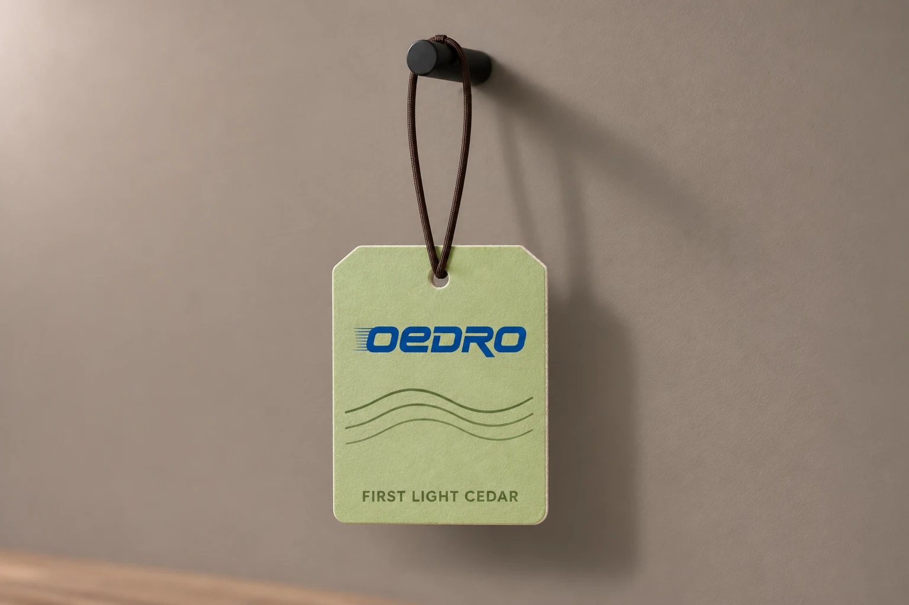
清晨雪松 First Light Cedar
双面印刷的厚棉纤维香片，带一股淡淡的干雪松香。6.0 × 8.0 厘米（2.36 × 3.15 英寸），哑面手感，逐片封袋。
给厂家的规格
请按 OEDRO 清晨雪松车载香片，单款单香 200 件报价，另报 3–5 件实香样。 纸片：吸香棉纤维／纤维素原纸，厚 2.0 ± 0.2 毫米（0.079 ± 0.008 英寸），尺寸 6.0 × 8.0 厘米（2.36 × 3.15 英寸），尺寸公差 ±1 毫米（0.04 英寸）。工装牌外轮廓，两上角各 5 毫米（0.20 英寸）斜切，下角 R3 毫米（0.12 英寸），头部中心线距上边 8 毫米（0.31 英寸）开直径 4 毫米（0.16 英寸）孔，咖啡黑 #302B27 聚酯弹力绳，线径 1.4 毫米（0.055 英寸），闭环周长 12 厘米（4.72 英寸），对折长约 6 厘米（2.36 英寸）。 印刷：双面 CMYK，耐香精油墨，无膜哑面，钢刀模切与冲孔。正面鼠尾草绿 #B9C3A0，官方字标蓝 #0D4D95，宽 4.4 厘米（1.73 英寸），在成品正面水平居中，字标中心距上缘 3.2 厘米（1.26 英寸）。字标下为三条简洁的等高线，底部小字“FIRST LIGHT CEDAR”，字高约 2 毫米（0.079 英寸）。背面同色印官方字标和香型。字标提供原始矢量，先按实际油墨和纸样核色、核细线。 香型：现有干雪松配方，低至中等强度，木质为主。请按实样提供每片加香重量与公差、当前适用 IFRA 车用固体载体类别符合声明（通常为 Category 12）、SDS、成品标签建议和运输分类资料。无可见游离油；实样目标为 23 ± 2°C 对照盲闻，开封第 1 天不过冲、第 14 天仍可辨认。请附厂内方法和结果。 包装：每片单独热封高阻香袋，95 × 135 毫米（3.74 × 5.31 英寸），PET／AL／PE 或经实测同等级阻香复合材料，封边至少 5 毫米（0.20 英寸），袋上印可分段开袋、悬空、避开驾驶视线和避免接触内饰的英文使用说明。统一装箱并标批号。 质检：与确认样对色。干白布来回擦 20 次后字标清楚且无明显转色，密封样 60°C 放置 24 小时、冷却后检查封口和渗油，纸面无流油、袋外无油痕，孔位无开裂。请分项列 200 件人民币含税及未税单价、MOQ、打样费和工期、刀模费、包装费、净重和箱规。 款式图：https://hsbrxlb.github.io/user-ops-hub/assets/merch-collection/scent/first-light-cedar.webp 车形组合标：https://hsbrxlb.github.io/user-ops-hub/assets/merch-collection/brand/oedro.svg 纯字标：https://hsbrxlb.github.io/user-ops-hub/assets/merch-collection/brand/wordmark.svg


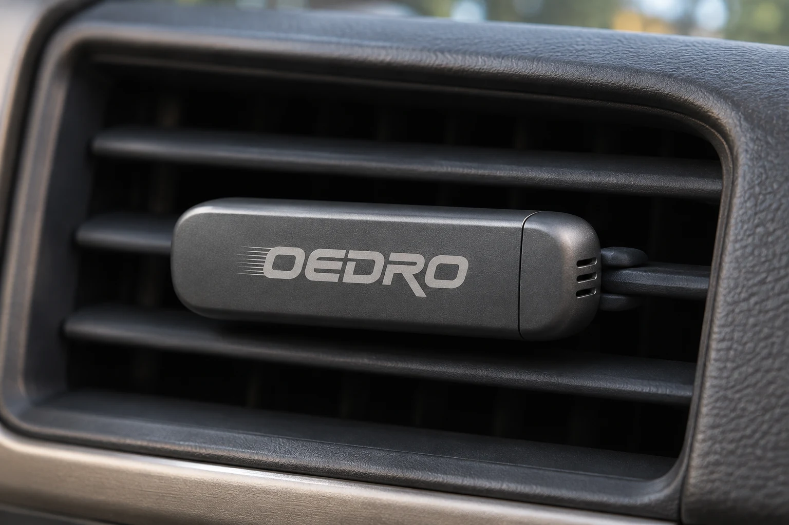
雨后柚香 Rain Check Citrus
石墨灰阳极氧化铝壳，正面激光刻字。6.5 × 2.0 × 1.4 厘米（2.56 × 0.79 × 0.55 英寸），出风口夹装，柚香固体芯可以换。
给厂家的规格
请按 OEDRO 雨后柚香出风口固体香薰，单款单香 200 套报价，含壳、夹及 1 枚香芯。另报 3–5 套实香样、同香型补充芯及 MOQ。 外壳：优先采用现有公模铝合金盒，6063 系或提供同级牌号。目标壳体（不含夹）6.5 × 2.0 × 1.4 厘米（2.56 × 0.79 × 0.55 英寸），壁厚 1.0–1.5 毫米（0.039–0.059 英寸），请回传实际尺寸图、公差和净重。长条圆角，石墨灰 #353A3D 细喷砂哑光阳极氧化，两端或背侧开散香孔，端盖可拆换芯且带机械止挡。正面居中激光去色刻官方字标，宽 3.7 厘米（1.46 英寸），刻色自然银灰 #B9BDC1。提供原始矢量，先用实壳打样核清楚。 夹子：黑色低光泽弹簧钢夹，接触面有硅胶／TPE 护套，硅胶 #222629。夹身露出长度目标 2.5–3.0 厘米（0.98–1.18 英寸）。回传适用风口叶片厚度、深度和方向。使用 1.5、2.0、3.0 毫米（0.059、0.079、0.118 英寸）平直试片试夹，标注实测兼容范围。拆装 50 次后夹头不开裂、脱套或明显松垮，端盖不开脱。 香芯：1 枚可替换低至中等强度固体 EVA 香芯，现有西柚皮加淡白茶配方，供应商回报单枚尺寸、净重、加香量与可供周期。请附当前适用 IFRA 车用固体载体类别符合声明（通常为 Category 12）、SDS、标签建议和运输分类资料。不附瓶装补充液。密封样 60°C 放置 24 小时后冷却，壳体及袋外无油痕，芯体未崩解、卡扣可拆装。提供室温实测开包即用强度和第 14 天持续可辨性数据。 包装：香芯单独 PET／AL／PE 热封袋，与壳分开装入素色 kraft 纸盒，目标 9.0 × 4.0 × 2.8 厘米（3.54 × 1.57 × 1.10 英寸），配英文安装说明及纸内托，分装传递无异味。请分项列 200 套人民币含税及未税单价、MOQ、打样和量产工期、刻字费、备芯费、包装费、整套净重及箱规。 款式图：https://hsbrxlb.github.io/user-ops-hub/assets/merch-collection/scent/rain-check-citrus.webp 车形组合标：https://hsbrxlb.github.io/user-ops-hub/assets/merch-collection/brand/oedro.svg 纯字标：https://hsbrxlb.github.io/user-ops-hub/assets/merch-collection/brand/wordmark.svg

帽子 Trucker & Camp Caps
挺括的网背卡车帽，或更贴头的五片软帽。两款均可调帽围。

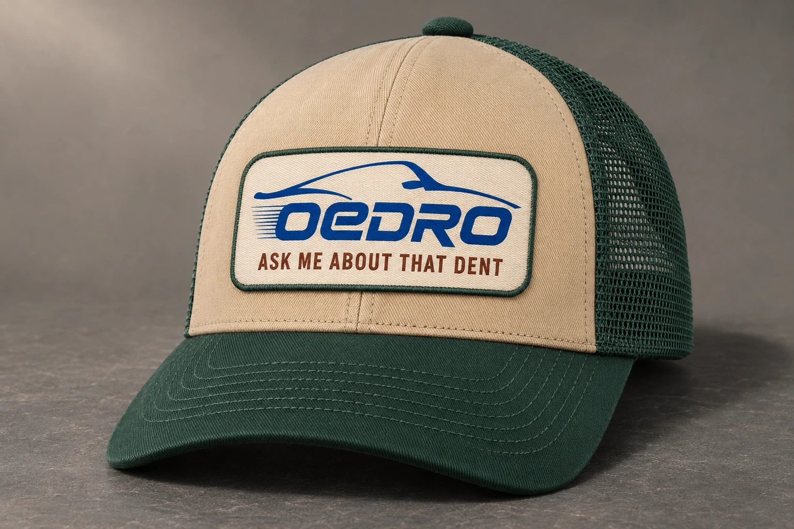
凹痕有故事 Ask Me About That Dent
沙色重磅棉斜纹前片，松绿网背和弯檐。织章缝在正面，OEDRO 标志下方织着一句车主玩笑。帽围 55–61 厘米（21.7–24.0 英寸）。
给厂家的规格
你好，想定制 OEDRO 六片网背卡车帽（Trucker Cap），同款同色 200 顶。请报 2 顶产前样、200 顶大货及相同规格 300 顶阶梯价。 帽体：中低冠，前二片＋帽檐面为 100% 棉斜纹 280±15 g/m²（8.3±0.4 oz/yd²），前片内加定型衬；后四片 100% 涤纶软网 160±15 g/m²（4.7±0.4 oz/yd²），内侧拼缝包边，棉涤吸汗带宽 3.0 厘米（1.18 英寸）。预弯帽檐，2.0±0.2 毫米（0.079±0.008 英寸）可弯 PE 内芯，六道同色平行车线。后部七位塑料排扣，帽围 55–61 厘米（21.7–24.0 英寸）；平放直量前冠高 10.5±0.5 厘米（4.13±0.20 英寸，自帽檐缝至冠顶的垂直高度），帽檐中心伸出长 7.0±0.3 厘米（2.76±0.12 英寸），展宽 18.0±0.5 厘米（7.09±0.20 英寸）。 颜色：前片浅沙色 #DDC9A6，帽檐、顶扣、后网和排扣松绿 #29483F。请寄现货色卡，按确认布样配色并反馈同色织物、网布及塑料扣的最小起订量。 帽章：横向圆角长方形，高密度涤纶细织章，9.8×4.6 厘米（3.86×1.81 英寸），米白底 #F3EBDD，松绿包边 #29483F，四周车缝。正中保留官方原比例的蓝色整标 #0D4D95（含车顶线），宽 8.0 厘米（3.15 英寸）；下方单行 Barlow Condensed Semibold 大写 ASK ME ABOUT THAT DENT，锈褐 #8C492E，字高 3 毫米（0.12 英寸）。帽章左右居中，下边离帽檐接缝 1.8±0.2 厘米（0.71±0.08 英寸）。请先给原尺寸织样确认细线、字腔和线色。请独立列出相同轮廓的热升华印涤纶织底布章备选价，仍用四周车缝。 交样和包装：查帽檐对称、帽章平整、无起线毛边及歪斜，排扣开合 100 次后仍能扣紧；常温手洗风干 3 次后，帽体和织章完好且白布擦拭无明显掉色。每顶内托纸圈、独立防尘袋，帽檐不折压；每箱 50 顶，五层瓦楞分层隔纸。请单列打样费、制版费、成品含包装出厂价、发往国内集货点的运费、发票、起订量、样品和大货交期、单件净重与装箱尺寸毛重，并说明价格是否含税。 款式图：https://hsbrxlb.github.io/user-ops-hub/assets/merch-collection/hat/dent-trucker.webp 车形组合标：https://hsbrxlb.github.io/user-ops-hub/assets/merch-collection/brand/oedro.svg 纯字标：https://hsbrxlb.github.io/user-ops-hub/assets/merch-collection/brand/wordmark.svg


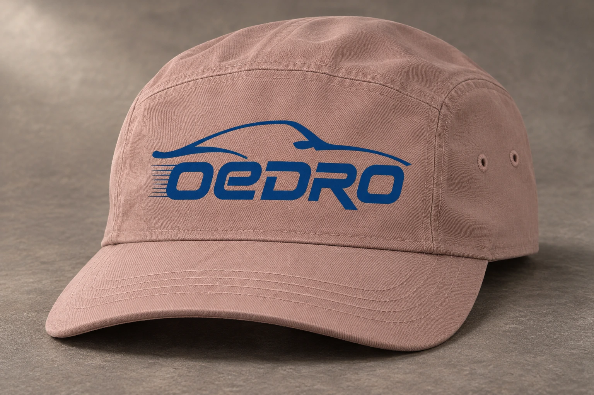
陶粉五片软帽 Dusty Rose Camp Cap
陶粉色水洗棉斜纹，低冠五片剪裁，后面用布带调节松紧。正面丝印蓝色 OEDRO 标志。帽围 54–61 厘米（21.3–24.0 英寸）。
给厂家的规格
你好，想定制 OEDRO 五片低冠软帽（Camp Cap），同款同色 200 顶。请报 2 顶产前样、200 顶大货及相同规格 300 顶阶梯价。 帽体：五片低冠软帽，整块前片无中缝，双侧各两个车缝透气眼。100% 棉水洗预缩斜纹 250±15 g/m²（7.4±0.4 oz/yd²），无硬衬，拼缝包边，棉涤吸汗带宽 3.0 厘米（1.18 英寸）。微弯帽檐，1.8±0.2 毫米（0.071±0.008 英寸）柔韧 PE 内芯，四道同色平行车线；后部同色棉织带 1.8 厘米（0.71 英寸）宽，搭配哑光枪灰日字扣。帽围 54–61 厘米（21.3–24.0 英寸）；平放直量前冠高 8.5±0.5 厘米（3.35±0.20 英寸，自帽檐缝至冠顶的垂直高度），帽檐中心伸出长 6.5±0.3 厘米（2.56±0.12 英寸），展宽 17.5±0.5 厘米（6.89±0.20 英寸）。 颜色：帽身、帽檐和调节带为陶粉 #C7AAA7，哑光枪灰五金 #595552。先按确认布样打色，报现货相近色与定染两档起订量及价格。 图案：裁片缝制前，在无中缝前片上单色水性丝印官方蓝色整标 #0D4D95（含车顶线），宽 8.0 厘米（3.15 英寸），等比约高 2.4 厘米（0.94 英寸），标志左右居中且下边距帽檐接缝 2.0±0.2 厘米（0.79±0.08 英寸）。做原尺寸印样，先核线条细节、字腔与实布色差，水性墨按厂家工艺完整固化。 交样和包装：检查冠高和前幅对称、帽檐复原、五金圆滑、织带拉紧后稳固。常温手洗风干 3 次后，图案不开裂、不粘手、白布擦拭无明显掉色。每顶独立防尘袋，每箱 50 顶，五层瓦楞分层隔纸，轻叠防止帽檐压折。请单列打样费、网版费、成品含包装出厂价、发往国内集货点的运费、发票、起订量、样品和大货交期、单件净重与装箱尺寸毛重，并说明价格是否含税。 款式图：https://hsbrxlb.github.io/user-ops-hub/assets/merch-collection/hat/rose-camp-cap.webp 车形组合标：https://hsbrxlb.github.io/user-ops-hub/assets/merch-collection/brand/oedro.svg 纯字标：https://hsbrxlb.github.io/user-ops-hub/assets/merch-collection/brand/wordmark.svg

T 恤 T-Shirt
两款都是成人中性版型。沙石色背印做得开，雾紫灰把标志收在左胸。

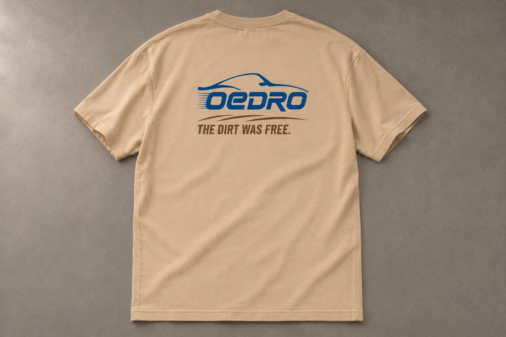
土路账单 The Dirt Was Free
沙石色重磅纯棉，摸得到布纹。背后是蓝色 OEDRO 和一句「泥倒是免费的」，两色水浆丝印宽 9.4 英寸（24 cm）。
给厂家的规格
您好，请按以下单款单色共 200 件成人中性款报价，按美码混码。 款式和面料：沙石色 #D9C4A7。235 g/m²（6.93 oz/yd²）100% 精梳环锭纺棉单面汗布，预缩，反应染同色批次。轻落肩、直摆，1×1 棉弹罗纹领高 2 cm（0.79 in），后领肩到肩包带，袖口及下摆双针。用现货最接近色给布卡并报同规格定制染色差价。 装饰：后中，两色水浆丝网印刷，整幅 24 × 12 cm（9.45 × 4.72 in），距后领罗纹下缘 8 cm（3.15 in）。上方完整车形 OEDRO 官方组合标 #0D4D95，宽 24 cm（9.45 in），按矢量原比例。下方 #795031 三道简化车辙和 THE DIRT WAS FREE.，文案用大写中粗窄体 Barlow Condensed SemiBold Italic 左齐，字高 1.45 cm（0.57 in）。车辙每根线宽至少 0.15 cm（0.06 in）且保留留白，前面素面。按墨水供应商条件固化，洗 10 次字口清楚、墨面不开裂不脱落。请附 1:1 分色稿和实物油墨色样。 美码平铺成衣（腋下 2.5 cm / 1 in 处半胸宽 × 领侧最高肩点到下摆 × 肩宽 × 肩缝到袖口）： S 25 件：52 × 69 × 49 × 22 cm（20.5 × 27.2 × 19.3 × 8.7 in） M 45 件：55 × 72 × 51 × 23 cm（21.7 × 28.3 × 20.1 × 9.1 in） L 55 件：58 × 74 × 53 × 24 cm（22.8 × 29.1 × 20.9 × 9.4 in） XL 45 件：62 × 76 × 56 × 25 cm（24.4 × 29.9 × 22.0 × 9.8 in） 2XL 22 件：66 × 78 × 59 × 26 cm（26.0 × 30.7 × 23.2 × 10.2 in） 3XL 8 件：70 × 80 × 62 × 27 cm（27.6 × 31.5 × 24.4 × 10.6 in） 后领内中心缝英文尺码及 MADE IN CHINA，侧缝缝英文纤维成分、护理方式及实际制造商或责任方名称。请将唛版先随样提交。 请先提供 M、XL 实样、面料克重和成分数据。按护理说明 30°C 翻面机洗、晾干 3 次，胸宽和衣长缩水绝对值各 ≤3%。按相同护理条件洗 10 次后检查装饰。成衣尺寸公差 ±1.5 cm（0.59 in），面料克重公差 ±5%。色牢度干摩擦 ≥4 级、湿摩擦 ≥3 级。 罗纹领应回弹平整，门幅侧缝扭斜 ≤3%。 请分列 200 件含装饰、英文唛及单件包装的人民币未税、含税单价、打样费、装饰开版费、开版费能否抵扣、最低起订量、样品和大货交期、外箱装量尺寸重量及中国境内运费。成品单件折叠入素色透明 PE 自封袋，外贴款色和美码，按码分箱。 款式图：https://hsbrxlb.github.io/user-ops-hub/assets/merch-collection/tee/dirt-was-free.webp 车形组合标：https://hsbrxlb.github.io/user-ops-hub/assets/merch-collection/brand/oedro.svg 纯字标：https://hsbrxlb.github.io/user-ops-hub/assets/merch-collection/brand/wordmark.svg


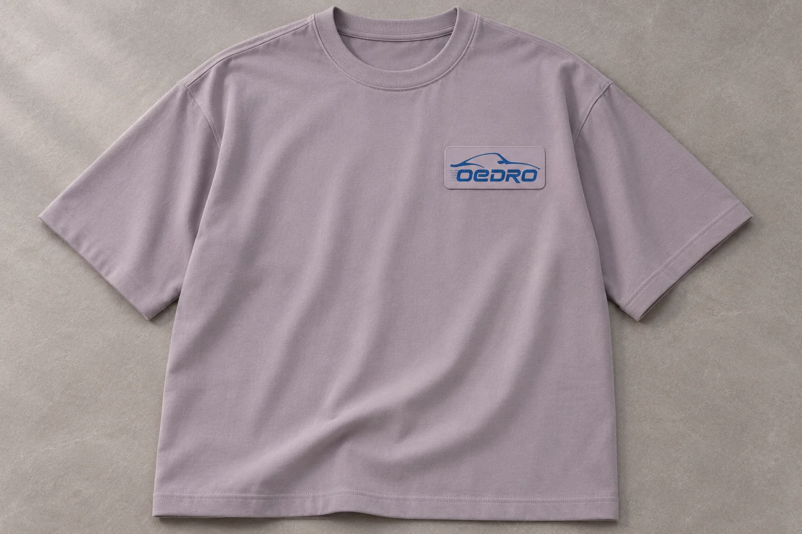
雾紫织章 Dust Lilac Label Tee
雾紫灰色 250 g/m² 纯棉，略短的方身配挺括圆领。左胸 3.7 × 1.4 英寸（9.5 × 3.5 cm）细织标平缝在衣面。
给厂家的规格
您好，请按以下单款单色共 200 件成人中性款报价，按美码混码。 款式和面料：雾紫灰 #B7AAB9。250 g/m²（7.37 oz/yd²）100% 精梳环锭纺棉单面汗布，预缩、反应染。方身轻落肩，直摆盖过腰线。1×1 棉弹罗纹领高 2.2 cm（0.87 in），后领肩到肩织带，袖口与下摆双针。请先报现货近色并附布卡。 装饰：穿着者左胸单枚高密度涤纶提花织章，尺寸 9.5 × 3.5 cm（3.74 × 1.38 in），倒圆角 R 0.3 cm（0.12 in），底与包边为同色灰紫 #B7AAB9。官方完整车形 OEDRO 组合标用 #0D4D95 蓝色织线，图案宽 8.5 cm（3.35 in）、原比例。织章顶部距领侧最高肩点 18 cm（7.09 in），横向中心距前中 10 cm（3.94 in）。边缘激光切后用同色线平缝一圈，线距边 0.2 cm（0.08 in）。提供 1:1 织样看车顶线和字孔。正面其余部位及背面素色。 美码平铺成衣（腋下 2.5 cm / 1 in 处半胸宽 × 领侧最高肩点到下摆 × 肩宽 × 肩缝到袖口）： S 25 件：53 × 66 × 51 × 22.5 cm（20.9 × 26.0 × 20.1 × 8.9 in） M 45 件：56 × 69 × 53 × 23.5 cm（22.0 × 27.2 × 20.9 × 9.3 in） L 55 件：59 × 71 × 55 × 24.5 cm（23.2 × 28.0 × 21.7 × 9.6 in） XL 45 件：63 × 73 × 58 × 25.5 cm（24.8 × 28.7 × 22.8 × 10.0 in） 2XL 22 件：67 × 75 × 61 × 26.5 cm（26.4 × 29.5 × 24.0 × 10.4 in） 3XL 8 件：71 × 77 × 64 × 27.5 cm（28.0 × 30.3 × 25.2 × 10.8 in） 后领内中心缝英文尺码及 MADE IN CHINA，侧缝缝英文纤维成分、护理方式及实际制造商或责任方名称。请将唛版先随样提交。 请先提供 M、XL 实样、面料克重和成分数据。按护理说明 30°C 翻面机洗、晾干 3 次，胸宽和衣长缩水绝对值各 ≤3%。按相同护理条件洗 10 次后检查装饰。成衣尺寸公差 ±1.5 cm（0.59 in），面料克重公差 ±5%。色牢度干摩擦 ≥4 级、湿摩擦 ≥3 级。 织章与衣身应平整，洗后无翘角、线头及拉皱。 请分列 200 件含装饰、英文唛及单件包装的人民币未税、含税单价、打样费、装饰开版费、开版费能否抵扣、最低起订量、样品和大货交期、外箱装量尺寸重量及中国境内运费。成品单件折叠入素色透明 PE 自封袋，外贴款色和美码，按码分箱。 款式图：https://hsbrxlb.github.io/user-ops-hub/assets/merch-collection/tee/dust-lilac.webp 车形组合标：https://hsbrxlb.github.io/user-ops-hub/assets/merch-collection/brand/oedro.svg 纯字标：https://hsbrxlb.github.io/user-ops-hub/assets/merch-collection/brand/wordmark.svg

连帽卫衣 Hoodie
夜蓝款的里侧是短绒，浅苔绿款的里侧保留棉毛圈。两款都能单穿，也能叠在外套里。

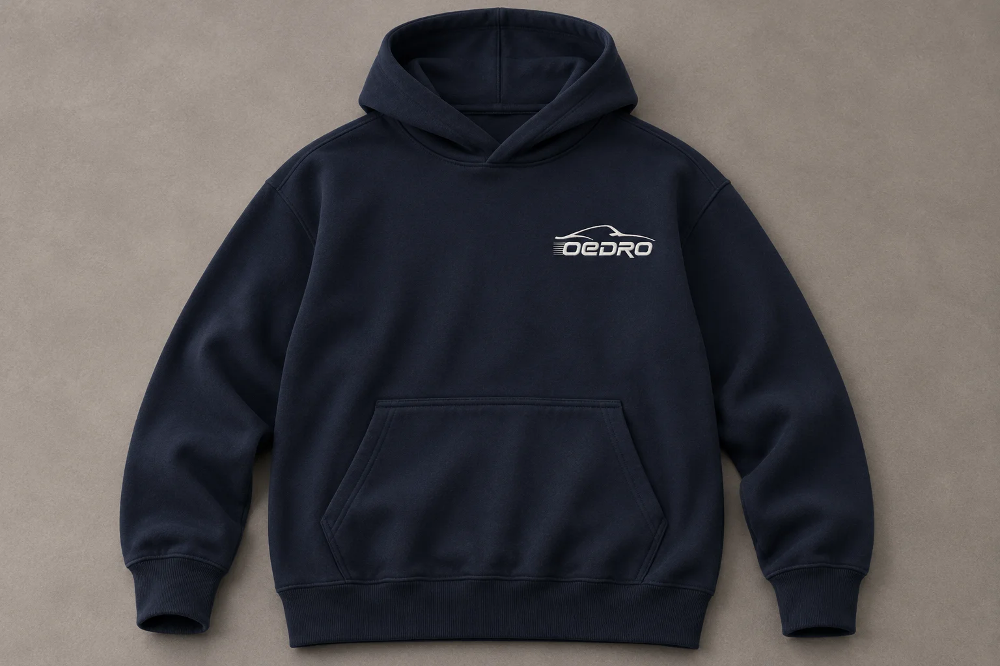
夜蓝抓绒 Night Shift Fleece
夜蓝套头卫衣配左胸平绣，里侧抓绒，兜里能暖手。360 g/m² 面料，胸前标志宽 3.7 英寸（9.5 cm）。
给厂家的规格
您好，请按以下单款单色共 200 件成人中性款报价，按美码混码。 款式和面料：夜蓝 #252F43。三线抓绒 360 g/m²（10.62 oz/yd²），整体 70% 棉、30% 涤纶。外面 100% 环锭精梳棉面纱，里侧是含涤的短绒层，报告实际底纱/绒纱配比。中厚蓬松，内侧为柔软短绒，常规折叠后可回弹。成人宽松套头，略落肩，双层两片帽；帽外为同衣身面料，帽里 180 g/m²（5.31 oz/yd²）同色全棉汗布。交叠帽口，无抽绳，袋鼠兜，兜口套结。袖口、下摆同色 2×2 棉弹罗纹，成品高 6 和 6.5 cm（2.36 和 2.56 in）。肩、袖窿、兜口双针。现货近色先报。 装饰：穿着者左胸完整官方车形 OEDRO 组合标，白色 #F5F4EF 40 番涤纶线平绣，宽 9.5 cm（3.74 in），原比例。图案顶距最高肩点 18 cm（7.09 in），横向中心距前中 10 cm（3.94 in）。用柔软防拉皱衬，贴肤一面平整，走针先做原尺寸绣样审批。正反面其余位置素面。 美码平铺成衣（腋下 2.5 cm / 1 in 处半胸宽 × 最高肩点到下摆 × 肩宽 × 肩缝到袖口）： S 25 件：54 × 67 × 51 × 61 cm（21.3 × 26.4 × 20.1 × 24.0 in） M 45 件：57 × 69 × 53 × 62 cm（22.4 × 27.2 × 20.9 × 24.4 in） L 55 件：60 × 71 × 55 × 63 cm（23.6 × 28.0 × 21.7 × 24.8 in） XL 45 件：63.5 × 73 × 57.5 × 64 cm（25.0 × 28.7 × 22.6 × 25.2 in） 2XL 22 件：67 × 75 × 60 × 65 cm（26.4 × 29.5 × 23.6 × 25.6 in） 3XL 8 件：71 × 77 × 63 × 66 cm（28.0 × 30.3 × 24.8 × 26.0 in） 后领内中心缝英文尺码及 MADE IN CHINA，侧缝缝英文纤维成分、护理方式及实际制造商或责任方名称。请将唛版先随样提交。 请先提供 M、XL 实样、面料克重和成分数据。按护理说明 30°C 翻面机洗、晾干 3 次，胸宽和衣长缩水绝对值各 ≤3%。按相同护理条件洗 10 次后检查装饰。成衣尺寸公差 ±1.5 cm（0.59 in），面料克重公差 ±5%。色牢度干摩擦 ≥4 级、湿摩擦 ≥3 级。 验收平绣字孔、车顶线、收边及贴肤衬，连续洗后无脱线、脱绒团；抗起球 ISO 12945-2 2000 转 ≥3 级。 请分列 200 件含装饰、英文唛及单件包装的人民币未税、含税单价、打样费、装饰开版费、开版费能否抵扣、最低起订量、样品和大货交期、外箱装量尺寸重量及中国境内运费。成品单件折叠入素色透明 PE 自封袋，外贴款色和美码，按码分箱。 款式图：https://hsbrxlb.github.io/user-ops-hub/assets/merch-collection/hoodie/night-shift.webp 车形组合标：https://hsbrxlb.github.io/user-ops-hub/assets/merch-collection/brand/oedro.svg 纯字标：https://hsbrxlb.github.io/user-ops-hub/assets/merch-collection/brand/wordmark.svg


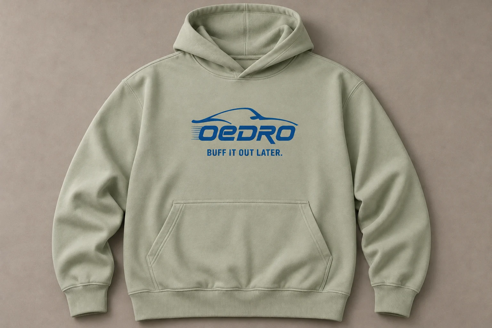
浅苔毛圈 Buff It Out Later
浅苔绿色套头卫衣，410 g/m² 纯棉毛圈，里面能摸到一圈圈棉线。胸前蓝色丝印宽 10.2 英寸（26 cm）。
给厂家的规格
您好，请按以下单款单色共 200 件成人中性款报价，按美码混码。 款式和面料：浅苔绿 #B6C0AA。410 g/m²（12.09 oz/yd²）100% 精梳环锭棉毛圈，外侧为平针棉面，内侧为同一织物的未抓绒棉毛圈。中厚偏重、有挺度，预缩且反应染。双层两片帽，帽外同身面料，帽里 180 g/m²（5.31 oz/yd²）同色全棉汗布，交叠帽口无抽绳，袋鼠兜口加套结。方身轻落肩，袖口和下摆同色 2×2 棉弹罗纹，成品高 6 和 6.5 cm（2.36 和 2.56 in）。肩、袖窿、兜口双针。现货近色优先，附原布与实染色卡。 装饰：正胸居中单色水性丝网印刷 #0D4D95，从前领底点向下 8.5 cm（3.35 in）起印，总宽 26 cm（10.24 in）、总高约 12 cm（4.72 in）。上方完整官方车形 OEDRO 组合标宽 26 cm（10.24 in），按原比例。下方居中 BUFF IT OUT LATER.，大写 Barlow Condensed SemiBold，字高 1.5 cm（0.59 in），标志和文字留白 1.7 cm（0.67 in）；图上与袋口相距至少 5 cm（1.97 in），背后素色。按油墨供应商条件固化。请随样交实际印色，十次洗后笔画不脱落、不开裂。 美码平铺成衣（腋下 2.5 cm / 1 in 处半胸宽 × 最高肩点到下摆 × 肩宽 × 肩缝到袖口）： S 25 件：56 × 66 × 53 × 60 cm（22.0 × 26.0 × 20.9 × 23.6 in） M 45 件：59 × 68 × 55 × 61 cm（23.2 × 26.8 × 21.7 × 24.0 in） L 55 件：62 × 70 × 57 × 62 cm（24.4 × 27.6 × 22.4 × 24.4 in） XL 45 件：65.5 × 72 × 59.5 × 63 cm（25.8 × 28.3 × 23.4 × 24.8 in） 2XL 22 件：69 × 74 × 62 × 64 cm（27.2 × 29.1 × 24.4 × 25.2 in） 3XL 8 件：73 × 76 × 65 × 65 cm（28.7 × 29.9 × 25.6 × 25.6 in） 后领内中心缝英文尺码及 MADE IN CHINA，侧缝缝英文纤维成分、护理方式及实际制造商或责任方名称。请将唛版先随样提交。 请先提供 M、XL 实样、面料克重和成分数据。按护理说明 30°C 翻面机洗、晾干 3 次，胸宽和衣长缩水绝对值各 ≤3%。按相同护理条件洗 10 次后检查装饰。成衣尺寸公差 ±1.5 cm（0.59 in），面料克重公差 ±5%。色牢度干摩擦 ≥4 级、湿摩擦 ≥3 级。 毛圈里无抽丝、密度明显不均。抗起球 ISO 12945-2 2000 转 ≥3 级。 请分列 200 件含装饰、英文唛及单件包装的人民币未税、含税单价、打样费、装饰开版费、开版费能否抵扣、最低起订量、样品和大货交期、外箱装量尺寸重量及中国境内运费。成品单件折叠入素色透明 PE 自封袋，外贴款色和美码，按码分箱。 款式图：https://hsbrxlb.github.io/user-ops-hub/assets/merch-collection/hoodie/buff-it-out.webp 车形组合标：https://hsbrxlb.github.io/user-ops-hub/assets/merch-collection/brand/oedro.svg 纯字标：https://hsbrxlb.github.io/user-ops-hub/assets/merch-collection/brand/wordmark.svg

托特包 Tote Bag
宽提带能单肩背。侧袋帆布款拿水方便，拉链款适合在车里装零碎。

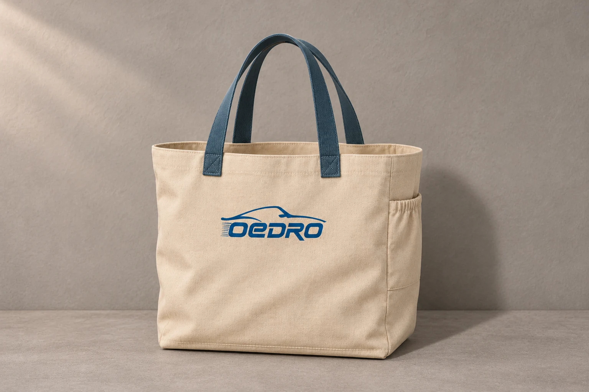
雾蓝侧袋托特 Blue Pocket Tote
约 12 oz 的本色全棉帆布，配雾蓝宽提带与品牌蓝丝印。袋身宽 15.0 × 高 13.4 × 深 4.7 英寸（38 × 34 × 12 厘米），侧袋可放水瓶。
给厂家的规格
您好，请按同款同色 200 个报价，本色全棉帆布侧袋托特。 袋身 38 × 34 × 12 cm（宽×高×底深，15.0 × 13.4 × 4.7 in），成品各边公差 ±1 cm（±0.4 in）。预缩 100% 棉平纹帆布 405 g/m² ±5%（约 12 oz/yd²），包身本色燕麦 #E8DDC9。敞口、平底、无里布，内缝包边。右侧外贴袋一个，同布，平量宽 11 × 高 18 cm（4.3 × 7.1 in），开口加横向弹力包边，请用直径 7 cm（2.8 in）的水瓶试放。内置同布插袋 16 × 14 cm（6.3 × 5.5 in）。 两条雾蓝 #3D5665 全棉织带，宽 3.5 cm（1.4 in）、净垂高 26 cm（10.2 in），两侧对称。带头在袋口加强区做方框加叉缝，受力处回针，底缝双车，加涤纶车缝线。 正面居中印原版 OEDRO 车形＋字标，图案顶距袋口 10 cm（3.9 in），图案宽 17 cm × 高约 5.2 cm（6.7 × 2.0 in），单色品牌蓝 #0D4D95 水性丝网印刷并热固化。保持原矢量比例与车顶线间距，对实际印刷版检查细线及字腔。背面素面；色号以确认的布样和印样为准。 成品抽样装 10 kg（22 lb）均布载荷悬挂 1 小时，再以 6 kg（13 lb）提放 100 次。提带和底缝应无开线、脱带或撕裂。面料和印位按 ISO 105-X12，干摩擦 ≥4 级、湿摩擦 ≥3 级。美国销售用英文纤维成分、原产地及护理缝标，产地按实际填写。 每只平折套无覆膜牛皮纸腰封，腰封 5 cm（2.0 in）宽，25 只一外箱，箱内用洁净防潮内袋。请列含印刷与单件包装的 200 件含税出厂单价、起订量、打样费及可退条件、样品和大货交期、装箱尺寸和毛净重、江浙沪送仓运费。按此配置先做 2 个产前样，布样、印样和缝制一起确认。 款式图：https://hsbrxlb.github.io/user-ops-hub/assets/merch-collection/tote/blue-pocket-tote.webp 车形组合标：https://hsbrxlb.github.io/user-ops-hub/assets/merch-collection/brand/oedro.svg 纯字标：https://hsbrxlb.github.io/user-ops-hub/assets/merch-collection/brand/wordmark.svg


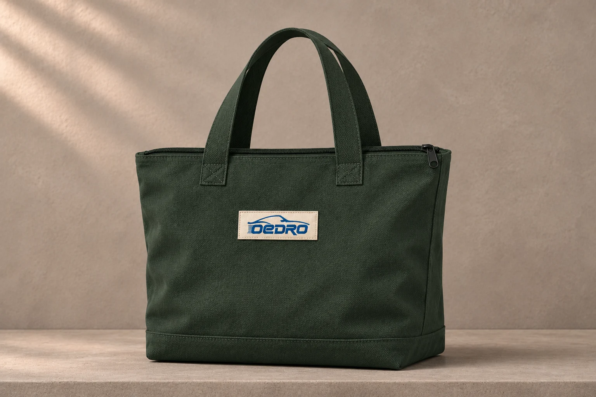
松绿拉链托特 Pine Zip Tote
约 16 oz 的深松绿全棉帆布，双层袋底，袋口用拉链收住。正面缝一枚品牌蓝细织章。袋身宽 16.5 × 高 12.6 × 深 5.9 英寸（42 × 32 × 15 厘米）。
给厂家的规格
您好，请按同款同色 200 个报价，深松绿全棉帆布拉链托特。 袋身 42 × 32 × 15 cm（宽×高×底深，16.5 × 12.6 × 5.9 in），成品各边公差 ±1 cm（±0.4 in）。主布用预缩 100% 棉染色平纹帆布 545 g/m² ±5%（约 16 oz/yd²），深松绿 #303D35。平底，底部同料双层，外圈同料上翻 2 cm（0.8 in）后平车，内缝同色包边，内侧同布插袋 18 × 16 cm（7.1 × 6.3 in）一个。袋口用 #5 尼龙线圈拉链，同色齿带，净开口约 36 cm（14.2 in），哑黑合金拉头一枚；两端回针加固。外侧与背面素面。 两条同色全棉宽织带，宽 4 cm（1.6 in），净垂高 25 cm（9.8 in）。接头为方框加叉缝，受力处回针，袋底双车，使用涤纶车缝线。 正面中心缝米白 #EEE4D0 高密度涤纶平织章，成品 11 × 4 cm（4.3 × 1.6 in），直角微圆，四边同底色沿边平车。织章顶距袋口 9 cm（3.5 in）。章上只织原版 OEDRO 车形＋字标，品牌蓝 #0D4D95，图案宽 9.0 cm（3.5 in），按原图比例高约 2.7 cm（1.1 in）。做等大织样，核字腔、车顶线与字之间的间距和细线。色号先用实体色卡核定。 成品抽样装 10 kg（22 lb）均布载荷悬挂 1 小时，再以 6 kg（13 lb）提放 100 次。提带、袋底、织章应无开线或撕裂。成品拉链空袋往返 500 次，齿无裂开，拉头无卡死。面料和织章按 ISO 105-X12，干摩擦 ≥4 级、湿摩擦 ≥3 级。美国销售用英文纤维成分、原产地及护理缝标，产地按实际填写。 每只平折套无覆膜牛皮纸腰封，腰封 5 cm（2.0 in）宽，20 只一外箱，箱内用洁净防潮内袋。请列含织章、缝章和单件包装的 200 件含税出厂单价、起订量、打样费及可退条件、样品和大货交期、装箱尺寸与毛净重、江浙沪送仓运费。按此配置先做 2 个产前样，布样、织章、拉链和缝制一起确认。 款式图：https://hsbrxlb.github.io/user-ops-hub/assets/merch-collection/tote/pine-zip-tote.webp 车形组合标：https://hsbrxlb.github.io/user-ops-hub/assets/merch-collection/brand/oedro.svg 纯字标：https://hsbrxlb.github.io/user-ops-hub/assets/merch-collection/brand/wordmark.svg

挡风玻璃贴 Vehicle Window Decal
车窗贴宽 13.0–14.5 厘米（5.12–5.71 英寸），接近美国大学校名车窗贴。当地允许时可贴后排固定侧窗下角，避开驾驶视野、雨刷、摄像头和加热线。
车窗贴在哪里？ Placement by state
加州和亚利桑那州前挡远离驾驶员的下角有 7 × 7 英寸（17.78 × 17.78 厘米）的贴纸区域，近侧只有 5 × 5 英寸（12.7 × 12.7 厘米），三款都超过近侧宽度。俄亥俄州允许前挡下角 6 英寸宽、4 英寸高，须避开车辆识别码。
佛州前挡只允许特定用途，纽约州前挡与后窗的贴纸须获授权。前挡或后窗受限时也要核对侧窗规定，特拉华州和内布拉斯加州对侧窗不透明标识另有限制。跨州使用可把两款背胶贴改贴在平滑工具箱上，静电款适合光滑玻璃。
加州车辆法 §26708 · 亚利桑那州法规 §28‑959.01 · 佛州法规 §316.2952 · 纽约州车辆及交通法 §375 · 俄亥俄州规定 · 特拉华州规定 · 内布拉斯加州规定

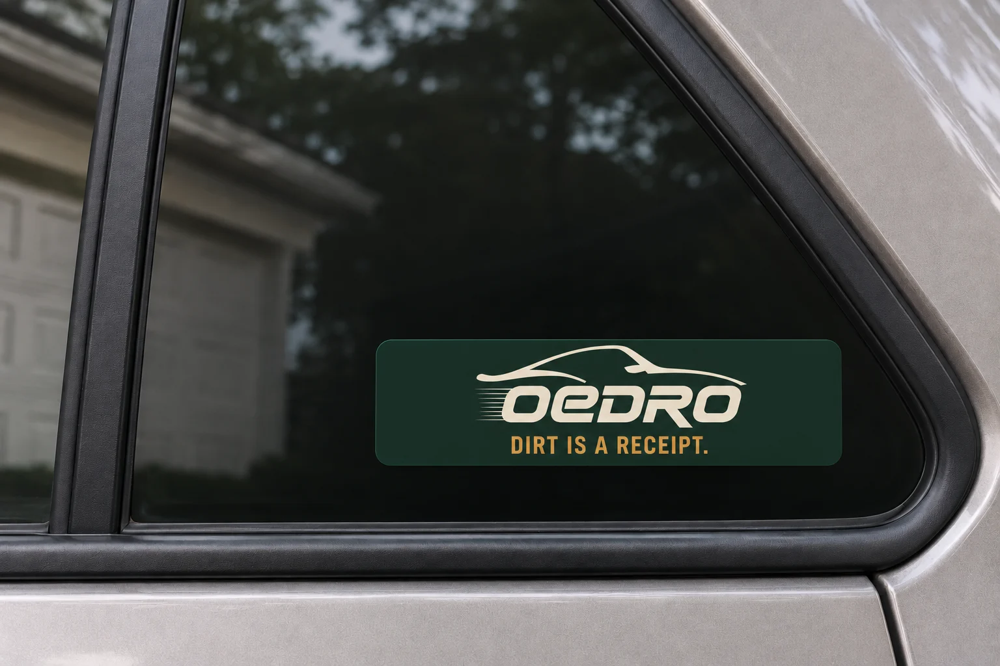
尘土是收据 Dirt Is a Receipt
深绿哑光外贴，米白 OEDRO 标志下是一句 DIRT IS A RECEIPT.可移背胶配抗 UV 覆膜。5.71 × 1.69 英寸（14.5 × 4.3 厘米）。
给厂家的规格
成品 145 × 43 mm（5.71 × 1.69 英寸／14.5 × 4.3 厘米），公差 ±1 mm，四角 R4 mm。适用车外平滑裸玻璃。 面材约 76 μm（3.0 mil）白色户外级可打印 PVC（如 ORAJET 3621 同等级），可移水性丙烯酸压敏背胶，干贴。印刷用耐候数码墨，覆 63 ± 10 μm（约 2.5 mil）抗 UV 透明哑光冷裱膜，面材与保护膜配套。 深绿 #24352F 满版，奶油白 #F1E8D4 印 OEDRO 车形组合标，宽 90 mm（3.54 英寸／9.0 厘米），距上沿约 4 mm。下方居中排 DIRT IS A RECEIPT.，暖琥珀 #DCA967，无衬线窄体粗字，字高 5 mm（0.20 英寸／0.5 厘米）。四边各留 2 mm 安全距离和 2 mm 印刷出血。 定位光标数控刀半穿模切，只切面材和覆膜，四周排废，底纸四边各留至少 4 mm。每张配离型底纸、安装说明纸与透明单张袋，硬纸平放装箱。 验收：23±2℃ 下擦净裸玻璃，贴样养护 48 小时，再做 24 小时室温浸水和 10 次 −20℃／70℃ 循环（每温度 1 小时）。边缘不翘起、无分层褪色。同批样按 ASTM G154 UVA-340 250 小时，色差 ΔE00≤3。7 天和 30 天在 23±2℃ 分别缓慢低角度剥离，肉眼无可见残胶。请说明实际推荐移除期限及方法。 请按该版同图同色 200 张独立报价，先做 3 张产前样。请列 200 张含单件包装单价（含税及未税）、打样费、开刀/版费、起订量、交期、外箱实重和长宽高、国内寄样运费。请提供面材/胶/保护膜型号和技术数据、同类玻璃试贴照片及下述测试记录。图案用我方提供的 OEDRO 官方矢量和转曲文案。首样核准后生产。 款式图：https://hsbrxlb.github.io/user-ops-hub/assets/merch-collection/decal/dirt-is-a-receipt.webp 车形组合标：https://hsbrxlb.github.io/user-ops-hub/assets/merch-collection/brand/oedro.svg 纯字标：https://hsbrxlb.github.io/user-ops-hub/assets/merch-collection/brand/wordmark.svg


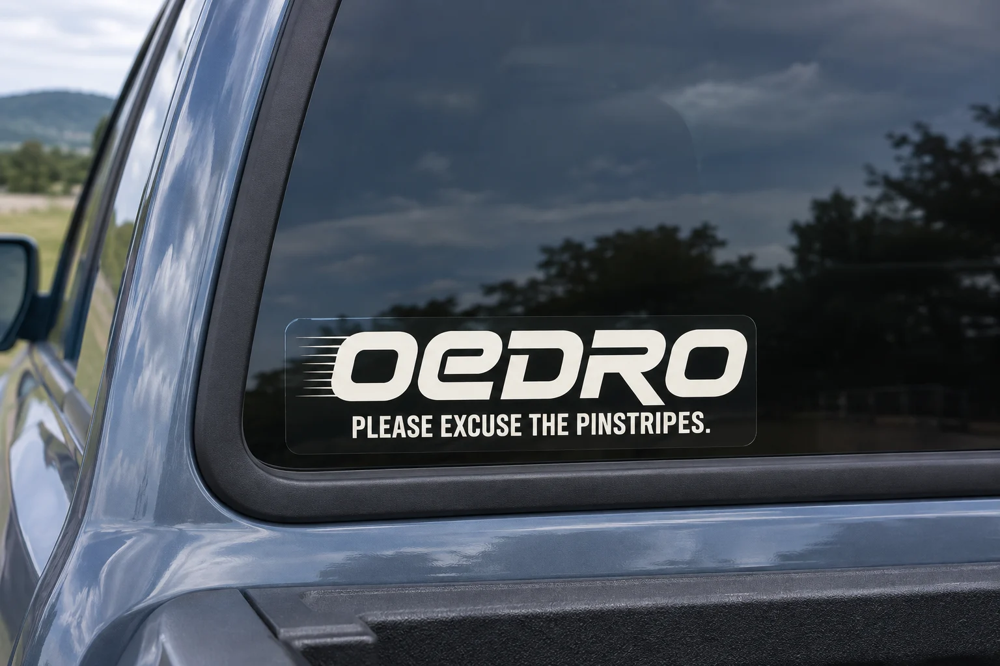
越野划痕见谅 Please Excuse the Pinstripes
车外玻璃透出原色，白字像直接落在玻璃上。耐候透明膜，留一圈低调的透明边。5.20 × 1.54 英寸（13.2 × 3.9 厘米）。
给厂家的规格
成品 132 × 39 mm（5.20 × 1.54 英寸／13.2 × 3.9 厘米），公差 ±1 mm，圆角 R4 mm。适用车外平滑裸玻璃。 光学透明户外级高光压延 PVC 约 76 μm（3.0 mil），配光学透明溶剂型可移丙烯酸压敏背胶（如 GF 255 同等级）及配套高透低雾抗 UV 透明亮面保护膜 50–65 μm（2.0–2.6 mil）。厂家按膜材说明给出贴法，可湿贴的产品随包给操作及彻底干燥时长。 透明底，高遮盖暖白 #FAF4E6 打印官方纯字标，宽 110 mm（4.33 英寸／11.0 厘米），居上。下方同色写 PLEASE EXCUSE THE PINSTRIPES.，窄体粗字，字高 4.5 mm（0.18 英寸／0.45 厘米）。一体膜，透明区无油墨，图案距刀线至少 2 mm。以白墨样贴深色玻璃确认遮蔽性和轮廓。 光标数控刀半穿圆角模切、排废，离型底纸比贴纸每边宽至少 4 mm，单张透明袋和说明纸平放装箱。 验收：按膜材贴法装在清洁裸玻璃，养护至少 48 小时并待水分干透，不见白雾和气泡。24 小时室温浸水和 10 次 −20℃／70℃ 循环（每温度 1 小时）后无翘边、无白化分层。ASTM G154 UVA-340 250 小时后白墨目视无明显泛黄，透明区无雾化。同批分别于 7 天和 30 天在 23±2℃ 低角度缓撕，玻璃肉眼无可见残胶。请列推荐移除期限及方法。 请按该版同图同色 200 张独立报价，先做 3 张产前样。请列 200 张含单件包装单价（含税及未税）、打样费、开刀/版费、起订量、交期、外箱实重和长宽高、国内寄样运费。请提供面材/胶/保护膜型号和技术数据、同类玻璃试贴照片及下述测试记录。图案用我方提供的 OEDRO 官方矢量和转曲文案。首样核准后生产。 款式图：https://hsbrxlb.github.io/user-ops-hub/assets/merch-collection/decal/excuse-the-pinstripes.webp 车形组合标：https://hsbrxlb.github.io/user-ops-hub/assets/merch-collection/brand/oedro.svg 纯字标：https://hsbrxlb.github.io/user-ops-hub/assets/merch-collection/brand/wordmark.svg

磁吸折叠手机支架 Magnetic Phone Grip
展开时留出双指握位，也能横放手机看视频。底座贴合兼容的磁吸手机或手机壳，充电时顺手取下。

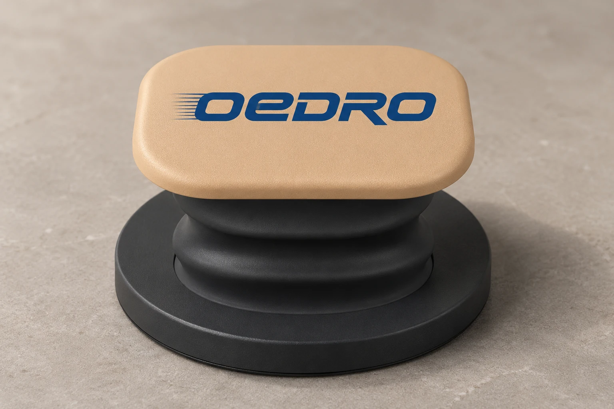
沙丘 Dune
沙色细纹顶盖，正面移印 OEDRO 深蓝字标。两段式气囊，磁吸底座直径 5.6 厘米（2.20 英寸）。
给厂家的规格
请报 OEDRO 沙丘磁吸气囊手机支架，同款同色 200 件。 顶盖：ABS 注塑原色 #D5B893，细纹咬花哑光，圆角长方形 4.4 × 3.6 cm（1.73 × 1.42 in），四角半径约 0.8 cm（0.31 in），顶板壁厚约 0.20 cm（0.079 in）。正面中心用耐磨双组分移印油墨印官方 OEDRO 纯字标，色 #104D8D，标宽 3.0 cm（1.18 in），等比高约 0.49 cm（0.19 in）。厂前先确认字标矢量样和深蓝色打样，表面 500 次干毡摩擦后图案仍清楚完整。 基座与尺寸：黑色 #222628 的 PC+ABS 注塑件，底座外径 Ø5.6 cm（2.20 in），展开总高约 2.2 cm（0.87 in），收合厚度 0.8 cm（0.31 in），外径公差 ±0.05 cm（0.02 in），收合高度公差 ±0.1 cm（0.04 in），单件净重 ≤35 g。圆周外缘倒圆 ≥0.06 cm（0.024 in），侧缘预留指腹拆卸位。 磁吸与防滑：配分段环形钕铁硼磁阵列，磁体外径目标 Ø5.4 cm（2.13 in）、厚约 0.2 cm（0.079 in），优先报 N52 或同级磁通方案。随样交磁材牌号、实际尺寸、分段极向图和背面低碳钢导磁片结构。磁体封装，不外露。背面用约 0.03 cm（0.012 in）哑黑防滑软硅胶接触层，整圈齐平，厂内固定，用户侧直接吸附。 折叠：成熟模具的 TPU 弹性气囊，建议 Shore A 80–85，固定顶盖，两段展开约 1.4 cm（0.55 in）与 2.2 cm（0.87 in），卡点明确，按压收平。侧面指腹接触边须平滑。开启用力 2.0–4.5 N、收合 3.0–7.0 N，夹紧底座后用推拉力计轴向慢测。横屏支架放在平整桌面，需稳定托住 250 g 手机 30 分钟。 兼容性：至少给出 iPhone 13 mini、iPhone 15 Pro Max 两个裸机与官方磁吸保护壳实贴结果，记录各型号摄像头净空，底座完整接触、可定位及拆卸。普通无磁光滑硬壳的背胶转接环单独选报，冲压去毛刺的 430 不锈钢外径 Ø5.5 cm（2.17 in）、内径 Ø4.5 cm（1.77 in）、厚约 0.04 cm（0.016 in），配可追溯的 3M 9495LE 约 0.017 cm（0.0067 in）或同等级实测胶。用定位纸，将环贴在清洁的光滑硬壳上并静置 72 小时后测试。说明卡列支持的表面、充电或装车载磁吸座前取下握持件，转接环单独评估充电和黏着兼容。 样品门槛：室温让底座居中，垂直匀速拉底座中心至脱离，裸机拉脱 6.4–8.8 N，官方磁吸保护壳上 ≥7.8 N。记录每个型号每种组合 3 次的最小、最大值。另用垂直姿态施加 5 N 平面切向力 10 秒，位移 ≤0.2 cm（0.08 in），连接不脱开。背胶环按相同磁吸剪切方式验证，另外在 45°C 平滑硬壳上承 5 N 平面负荷 24 小时，位移 ≤0.1 cm（0.04 in），无翘边。至少 3 件各开合 5,000 次后仍能稳定卡位，TPU 无裂纹，顶盖固定，开合力与磁吸复测仍达标。厂内固定底座做 30 N 轴向结构拉力 10 秒，盖、气囊、底座和胶层完整。每件手检开合、外观及磁阵列装反。 交付：每件单独保护纸袋及带卡扣的牛皮纸托，包装外尺寸建议 8 × 8 × 1.5 cm（3.15 × 3.15 × 0.59 in），英文说明卡。外箱加隔档防磨，报装箱尺寸和毛重。按成熟可对美供货的自有或授权模具报价，附结构图、外观和机构权属材料，供生产前核对。请分列 200 件人民币含税及未税单价、标志加工、包装、打样 3 件费用和周期、确认样到交货天数、最小起订量、色差样和本地运费。 款式图：https://hsbrxlb.github.io/user-ops-hub/assets/merch-collection/grip/grip-dune.webp 车形组合标：https://hsbrxlb.github.io/user-ops-hub/assets/merch-collection/brand/oedro.svg 纯字标：https://hsbrxlb.github.io/user-ops-hub/assets/merch-collection/brand/wordmark.svg


深湾 Deep Bay
深海蓝喷砂铝顶盖，镭雕 OEDRO 银灰字标。两段式气囊，磁吸底座直径 5.6 厘米（2.20 英寸）。
给厂家的规格
请报 OEDRO 深湾磁吸气囊手机支架，同款同色 200 件。 顶盖：6063 铝合金薄片冲制，可另报同厚 5052-H32 现成板材，直径 Ø4.2 cm（1.65 in），片厚 0.12 cm（0.047 in），细喷砂后深海蓝阳极氧化，目标色 #28455A，氧化膜 10–15 μm，周边倒圆，机械压边固定在黑色 PC+ABS 顶盖载体。正面中心激光打标露银灰 #BFC5C7，标志为官方 OEDRO 纯字标，宽 3.0 cm（1.18 in），等比高约 0.49 cm（0.19 in）。先交激光样，500 次干毡摩擦后字标清楚，边缘无发毛。 基座与尺寸：黑色 #222628 的 PC+ABS 注塑件，底座外径 Ø5.6 cm（2.20 in），展开总高约 2.2 cm（0.87 in），收合厚度 0.8 cm（0.31 in），外径公差 ±0.05 cm（0.02 in），收合高度公差 ±0.1 cm（0.04 in），单件净重 ≤35 g。圆周外缘倒圆 ≥0.06 cm（0.024 in），侧缘预留指腹拆卸位。 磁吸与防滑：配分段环形钕铁硼磁阵列，磁体外径目标 Ø5.4 cm（2.13 in）、厚约 0.2 cm（0.079 in），优先报 N52 或同级磁通方案。随样交磁材牌号、实际尺寸、分段极向图和背面低碳钢导磁片结构。磁体封装，不外露。背面用约 0.03 cm（0.012 in）哑黑防滑软硅胶接触层，整圈齐平，厂内固定，用户侧直接吸附。 折叠：成熟模具的 TPU 弹性气囊，建议 Shore A 80–85，固定顶盖，两段展开约 1.4 cm（0.55 in）与 2.2 cm（0.87 in），卡点明确，按压收平。侧面指腹接触边须平滑。开启用力 2.0–4.5 N、收合 3.0–7.0 N，夹紧底座后用推拉力计轴向慢测。横屏支架放在平整桌面，需稳定托住 250 g 手机 30 分钟。 兼容性：至少给出 iPhone 13 mini、iPhone 15 Pro Max 两个裸机与官方磁吸保护壳实贴结果，记录各型号摄像头净空，底座完整接触、可定位及拆卸。普通无磁光滑硬壳的背胶转接环单独选报，冲压去毛刺的 430 不锈钢外径 Ø5.5 cm（2.17 in）、内径 Ø4.5 cm（1.77 in）、厚约 0.04 cm（0.016 in），配可追溯的 3M 9495LE 约 0.017 cm（0.0067 in）或同等级实测胶。用定位纸，将环贴在清洁的光滑硬壳上并静置 72 小时后测试。说明卡列支持的表面、充电或装车载磁吸座前取下握持件，转接环单独评估充电和黏着兼容。 样品门槛：室温让底座居中，垂直匀速拉底座中心至脱离，裸机拉脱 6.4–8.8 N，官方磁吸保护壳上 ≥7.8 N。记录每个型号每种组合 3 次的最小、最大值。另用垂直姿态施加 5 N 平面切向力 10 秒，位移 ≤0.2 cm（0.08 in），连接不脱开。背胶环按相同磁吸剪切方式验证，另外在 45°C 平滑硬壳上承 5 N 平面负荷 24 小时，位移 ≤0.1 cm（0.04 in），无翘边。至少 3 件各开合 5,000 次后仍能稳定卡位，TPU 无裂纹，顶盖固定，开合力与磁吸复测仍达标。厂内固定底座做 30 N 轴向结构拉力 10 秒，盖、气囊、底座和胶层完整。每件手检开合、外观及磁阵列装反。 交付：每件单独保护纸袋及带卡扣的牛皮纸托，包装外尺寸建议 8 × 8 × 1.5 cm（3.15 × 3.15 × 0.59 in），英文说明卡。外箱加隔档防磨，报装箱尺寸和毛重。按成熟可对美供货的自有或授权模具报价，附结构图、外观和机构权属材料，供生产前核对。请分列 200 件人民币含税及未税单价、标志加工、包装、打样 3 件费用和周期、确认样到交货天数、最小起订量、色差样和本地运费。 款式图：https://hsbrxlb.github.io/user-ops-hub/assets/merch-collection/grip/grip-deep-bay.webp 车形组合标：https://hsbrxlb.github.io/user-ops-hub/assets/merch-collection/brand/oedro.svg 纯字标：https://hsbrxlb.github.io/user-ops-hub/assets/merch-collection/brand/wordmark.svg

随礼卡 Gift Enclosure Card
2026 年排期 Production Schedule
- 11/23–11/29
- 设计定稿，向供应商和代包装厂询价
- 11/30–12/06
- 选定供应商，寄样品
- 12/07–12/13
- 确认样品，走采购流程
- 12/14–12/20
- 开始生产，对接代包装厂
- 12/21–12/27
- 打包，寄出